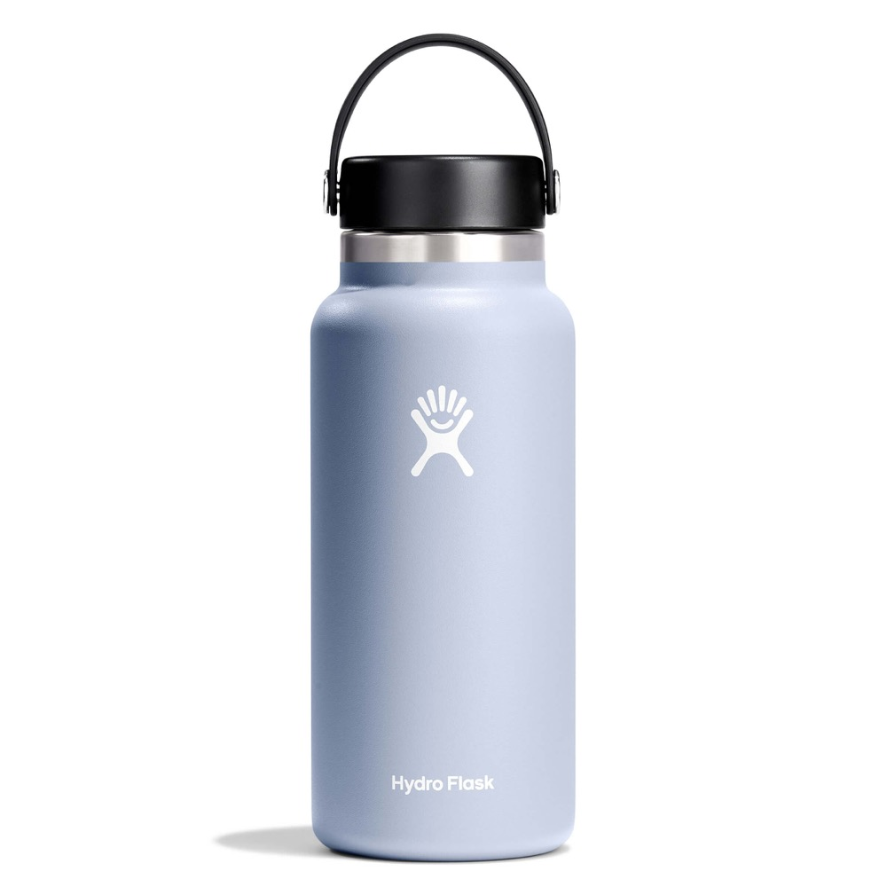

The 32 ounce Wide Mouth is the bottle most people picture when they hear Hydro Flask, and it is comfortably the most popular size the brand sells. It is also the size most likely to end up abandoned in a hotel room because it was heavier than the trip needed. Both of those things are true at once, and which one applies to you depends entirely on where you are going.
Note: this post contains affiliate links. If you buy through them I may earn a small commission at no cost to you, see my disclosure. Prices change often, so check the current price before you buy.
The insulation is not marketing, it genuinely holds ice all day, and the build is good enough to make this a years-long purchase rather than a seasonal one. The costs are weight and bulk, and the cap it ships with is the weakest part. Buy it for hot climates and daily use. Take something lighter if you are counting grams.
What You Are Actually Paying For
Double-wall vacuum insulation, which is to say a vacuum between two walls of stainless steel with almost nothing left in the gap to carry heat. That is the whole trick, and it is why the outside stays dry and room temperature while the inside stays at 34 degrees. No condensation ring on the hotel nightstand, no sweating bottle soaking the inside of a daypack.
Hydro Flask rates it at up to 24 hours cold and up to 12 hours hot. In ordinary use those numbers hold up better than most marketing claims. Ice put in at breakfast is generally still ice at dinner, provided you are not opening the thing every ten minutes.

The 32 oz Wide Mouth. Product image courtesy of Hydro Flask.
Why It Works
The insulation changes hot-weather travel
This is the whole argument. In Las Vegas in July, or anywhere humid and tropical, the difference between cold water and warm water is the difference between drinking enough and not. A bottle that is still cold at 4pm gets used. A bottle of hot plastic-flavoured water gets ignored, and then you are buying single-use bottles all afternoon.
The wide mouth is the right choice
It takes standard ice cubes, which narrow-mouth bottles will not, and it is the difference between cleaning the bottle properly and shaking soapy water around hoping for the best. A bottle you can get your hand into is a bottle that does not eventually smell.
It survives being luggage
The powder coat scratches, and the base will dent if you drop it on concrete, but the vacuum seal is what matters and it holds. A dented Hydro Flask still insulates. This is a bottle that gets thrown in a bag for years, which is the only way the price makes sense.
Where It Falls Short
- The weight is real. Around 15 ounces empty and close to three pounds full. In a daypack on a long day that is genuinely noticeable, and it is the number one reason people downsize to the 21 oz or leave it behind.
- The stock cap is the weak link. The standard flex cap means unscrewing the whole thing every time you want a drink, which is awkward while walking or driving. Most people end up buying a straw lid separately, which is an extra cost on an already expensive bottle.
- It does not fit everywhere. The 32 oz is too fat for a lot of car cup holders and a lot of side pockets on smaller daypacks. Check before you commit.
- Hand wash only, realistically. Newer models are marketed as dishwasher safe, but heat and powder coat are not long-term friends. Expect to wash it by hand if you want it to keep looking new.
When a Nalgene Is the Better Bottle
Worth saying plainly, because the honest answer is not always the expensive one. A Nalgene wide mouth costs roughly a fifth of a Hydro Flask, weighs about a quarter as much, and is close to indestructible. It has no insulation at all.
Take the Nalgene when weight matters, when you are near water and refilling constantly, when you need to see how much is left at a glance, or when you want to pour boiling water in without a second thought. The measurement markings on the side are genuinely useful for camp cooking and for rehydration salts.
Take the Hydro Flask when the temperature of the water is the point. Hot climates, long days away from a fridge, or a hotel room with no ice machine.
Which Size to Buy
If this is your only bottle and you mostly use it at a desk, in a car, or around a hotel, the 32 oz is right and the weight rarely matters. If it is going in a daypack every day, the 21 oz is the size most people are happier with a month later. The 40 oz exists and is for people who have made a decision about their life that I cannot help with.
Frequently Asked Questions
How long does a Hydro Flask keep water cold?
Hydro Flask rates the Wide Mouth at up to 24 hours cold and up to 12 hours hot, and in normal use that is close to honest rather than marketing. Fill it with ice and cold water in the morning and you will still have ice that evening. The variable is how often you open it, because every opening dumps the cold air and resets the clock.
Is the Hydro Flask 32 oz too heavy for travel?
Empty it is around 15 ounces, and full it is closer to 3 pounds. That is real weight in a daypack, and it is the single most common regret people have with this size. If you are counting grams for a hike or a one-bag trip, a lighter bottle is the correct answer.
Hydro Flask or Nalgene for travel?
Different jobs. Hydro Flask if you want cold water in hot places, which matters in somewhere like Vegas in July or Southeast Asia. Nalgene if you want light, cheap, and effectively indestructible, and you do not care about temperature. A Nalgene also takes boiling water and marks off in measurements, which matters for camp cooking.
Is the Hydro Flask worth the money?
If you use it daily for years, yes, helped by a lifetime warranty on manufacturing defects. If you want a bottle for occasional trips, the value case is much weaker and a cheaper insulated bottle will do nearly the same job. Buy it for the insulation, not the logo.